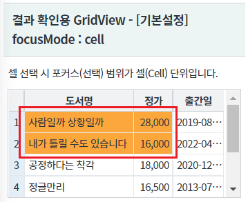
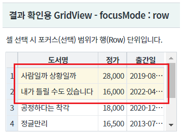
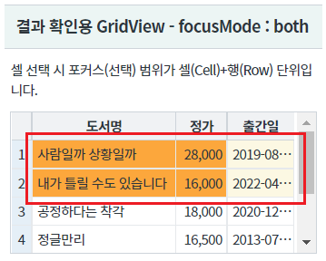
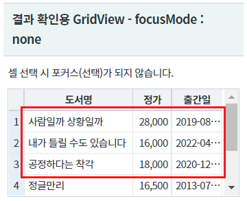
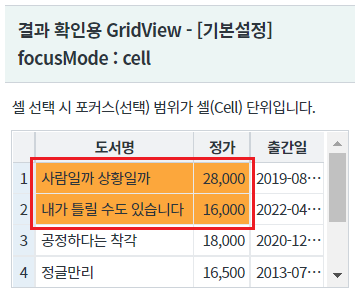
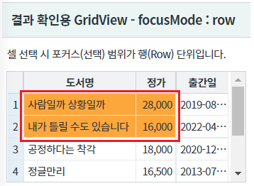
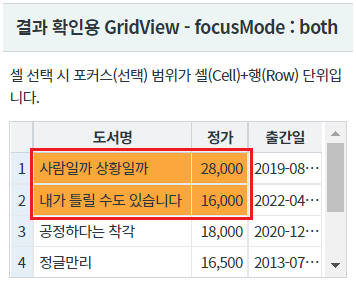
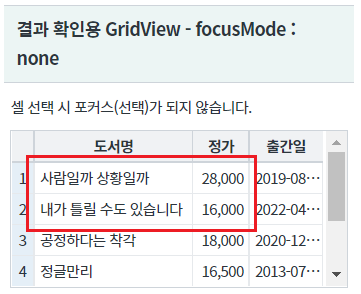
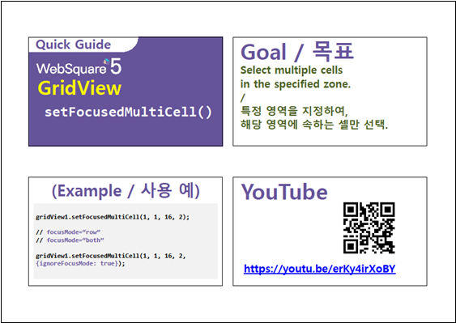

GridView의 셀의 범위 선택을 스크립트로 지정하는 예제입니다.
셀의 범위 선택하기
설정된 FocusMode 무시하고 셀의 범위 선택하기
FocusMode 설정별 GridView가 구성되어있습니다. "범위 선택 실행 영역"의 버튼들을 클릭하여 설정별 GridView를 비교합니다.
설정된 FocusMode에 따라 GridView의 1번째 행의 1번째 열(도서명) ~ 2번째 행의 2번째 열(정가) 셀이 선택됩니다.
FocusMode별 GridView를 비교합니다.
CASE1. focusMode : cell
[브라우저(Chrome) 실행 예시 - focusMode : cell]

CASE2. focusMode : row
[브라우저(Chrome) 실행 예시 - focusMode : row]

CASE3. focusMode : both
[브라우저(Chrome) 실행 예시 - focusMode : both]

CASE4. focusMode : none
[브라우저(Chrome) 실행 예시 - focusMode : none]

GridView의 1번째 행의 1번째 열(도서명) ~ 2번째 행의 2번째 열(정가) 셀이 설정된 FocusMode를 무시하고 셀 단위로 선택됩니다.
(FocusMode:none 의 경우는 선택되지 않습니다.)
FocusMode별 GridView를 비교합니다.
CASE1. focusMode : cell
[브라우저(Chrome) 실행 예시 - focusMode : cell]

CASE2. focusMode : row
[브라우저(Chrome) 실행 예시 - focusMode : row]

CASE3. focusMode : both
[브라우저(Chrome) 실행 예시 - focusMode : both]

CASE4. focusMode : none
[브라우저(Chrome) 실행 예시 - focusMode : none]

DataList 생성 및 연결은 생략되었습니다.
원하는 시점에 setFocusedMultiCell method를 이용하여 스크립트에서 설정할 수 있습니다.
//1번째 행 1번째 컬럼 ~ 2번째 행 2번째 컬럼 선택하기 grd_exam1.setFocusedMultiCell(0,0,1,1);
원하는 시점에 setFocusedMultiCell method를 이용하여 스크립트에서 설정할 수 있습니다.
//1번째 행 1번째 컬럼 ~ 2번째 행 2번째 컬럼 선택하기 - 설정된 FocusMode 무시 grd_exam1.setFocusedMultiCell(0,0,1,1,{ignoreFocusMode:true}); //setFocusedMultiCell( startRow , startCol , endRow , endCol ) //startRow : 포커스영역 시작지점의 row값. 즉, 포커스 영역 왼쪽 최상단 셀의 rowIndex. //startCol : 포커스영역 시작지점의 column값. 즉, 포커스 영역 왼쪽 최상단 셀의 colIndex //endRow : 포커스영역 종료지점의 row값. 즉, 포커스 영역 우측 최하단 셀의 rowIndex //endCol : 포커스영역 종료지점 column값. 즉, 포커스 영역 우측 최하단 셀의 colIndex
setFocusedMultiCell( startRow , startCol , endRow , endCol )
[웹스퀘어5 SP5 개발 가이드] GridView
링크 : https://docs1.inswave.com/sp5_user_guide/86bdcf48029b958b
[웹스퀘어5 SP5 개발 가이드] GridView 동적 셀 선택
링크 : https://docs1.inswave.com/sp5_user_guide/86bdcf48029b958b#ba0a60381375fb51
GridView 동적 셀 선택
링크 : https://youtu.be/erKy4irXoBY
